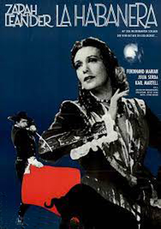
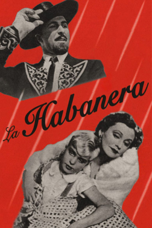
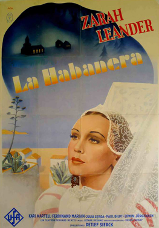

La Habanera
Zarah Leander
Karl Martell
Paul Bildt
Boris Alekin
Michael Schulz-Dornburg
Lisa Helwig
Werner Finck
SYNOPSIS
Astrée Sternhjelm is visiting Puerto Rico with her Aunt Ana, and is enchanted by the island. The day before leaving she meets the wealthy Don Pedro at a bullfight arena, and is infatuated by him. Just before the ship takes off, she hears the song "La Habanera" sung by some natives at the quay. The song strikes a chord in her heart, and without hesitating she leaves the boat to find Don Pedro. After some weeks they get married.
Ten years later her paradise has turned into hell. She is locked up with her son Juan in the big estate by her jealous and controlling husband. In Stockholm her Aunt Ana is financing a foundation, which is sending two doctors to Puerto Rico to research a tropical fever. One of them, Dr. Sven Nagel, was once in love with Astrée, and the aunt asks him to find out what has happened to her niece. When the two doctors arrive to the island, they are met with hostility from the authorities and the local doctors, who are afraid that news about the tropical fever in the world press, would cause all investors to withdraw from Puerto Rico. The Swedish doctors succeed secretly to get a bacteriological sample and develop an antidote. Don Pedro invites them to a party in his house, as part of a plot to get them imprisoned.
This was the final film directed by Detlef Sierck in Germany before he fled Germany and emigrated to the United States where he changed his name to Douglas Sirk. Zarah Leander had been hired by UFA, the German film company, in 1936, and was its new star. The film presented her beauty and talents as Germany’s answer to Greta Garbo. Bruno Balz, who wrote the text for the title song, would later be sent to a concentration camp - he was a homosexual. A scene with the comedian Werner Finck as Söderblom was cut by the censors, but restored after the war. This was the only film for the child actor Michael Schulz-Dornburg who played Juan; at the end of WWII, he was drafted and died at the age of 17 near Berlin in 1945.
The movie was not shot in Puerto Rico, but on Tenerife in the Canary Islands, during the Spanish Civil War. It presented an interesting but fanciful image of Puerto Rico, mixing curiosity about the exotic, fantasy and prejudice. The shepherds wear loincloths, and everybody speaks perfect German. The island appears to be run by selfish, authoritarian and corrupt local businessmen and landowners, and the movie is critical of the United States as the responsible party. In the film, habanera music (music that actually originated from Cuba) represents the soul of the island, its "erotic pull", it captivates and enchants Astrée for some time, but in the end she is happy to return home.
The lesson for the contemporary German moviegoer was clear: it is better to stick to your roots. The film plays into the Nazi propaganda theme trying to repatriate Germans. However, the film can also be seen as critical of Nazi Germany: a dictator imperils his own people, is hostile towards foreigners and has a secret he wishes to hide (the plague = concentration camps).


